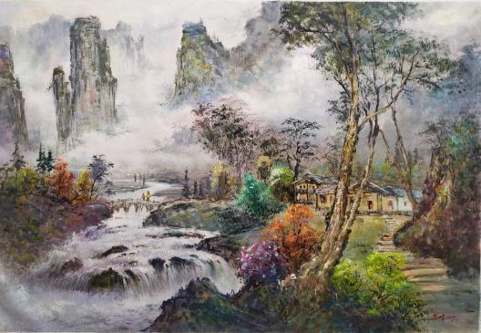
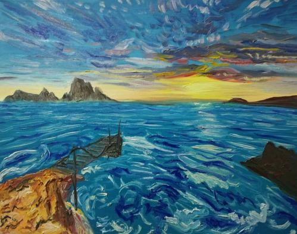

油画最早起源于欧洲，中国油画最早起源于距今400年前，意大利天主教士利玛窦等人来华传教，把欧洲油画作品带进中国。外来艺术发展成为中国绘画的组成部分，经历了漫长的学习、吸收和成长过程。
距今 400年前，意大利天主教士利玛窦等人来华传教，把欧洲油画作品带进中国。
明万历二十九年（1601）利玛窦向明神宗朱翊钧所献礼品中就有天主像、圣母像等。这种精细逼真的绘画，使中国油画家感到惊异，但并未给予较高的艺术评价，也没有中国画家追随这种画法。到清朝初年，有许多擅长油画的欧洲传教士来华，并在宫廷供职。其中较著名的有意大利人郎世宁、潘廷章，法国人王致诚等。他们是中国宫廷内第1批外籍画师，曾受命绘制过多幅油画肖像。乾隆帝弘历曾命宫中选少年奴仆，随洋人学泰西画法（油画技法）。
清代，广州十三行成为中国唯一的通商口岸，“外销画”是外销品之一，洋画家也来此谋生，并收徒授业，培养出第一批中国油画家，代表人物有史贝霖、关乔昌、关联昌，史贝霖是“中国最早的油画家”。19世纪30年代后，英国画家乔治·钱纳利来华传授水粉画技法，大大提升了广州“外销画”水准，关乔昌即为其高徒，关乔昌的《老人头像》曾入选英国皇家美术学院展，是最早在欧洲画展上亮相的中国画家。
19世纪末－－1937年是第一阶段。油画传到中国后立即参与社会的文化启蒙。作为外来的艺术形式，它给中国人耳目一新的感觉，在提供新的美感的同时，推动了中国人的恩维变革与社会进步。
1938——1949年为第二阶段。在抗日战争与解放战争时期，因为战争环境和物质条件的限制，油画艺术不能得到发展，但已经从事这门艺术的画家们，或在斗争生活中得到了磨练，为尔后的创作积累了素材，或在战事较少涉及的后方克服困难完成了一部分作品，培养了一批青年油画家。这时油画艺术处于逆境之中。它的暂时被压抑犹如正在蓬勃生长的树干受到了风雨无情的摧残，它变得扭曲但仍然保持着向上发展的生机。1949年中华人民共和国成立，国家的统一和民族的振兴，使油画获得发展的有利时机。
1949－－1965年，虽然油画艺术受到了"以阶级斗争为纲"的政治运动干扰，艺术家的创造积极性不时受到限制甚至遭到打击，但油画还是得到了很大的发展，艺术家们创造了不少优秀的作品。当然不少作品打上了为政治服务的烙印。
在1966－－1976年的文化大革命期间，油画家们和他们从事的艺术受到了无情的摧残。少量允许创作的作品也大多是为"文革"的宗旨服务的。中国油画的新生是在改革开放之后的新时期（1977年至今）。较为安定平和的政治环境，较为自由的艺术氛围，使艺术家们能较安心地从事艺术创造；较为广阔的国际间的艺术交流，使艺术家们能更多地了解当代世界的艺术信息。经济的蓬勃发展和人民生活明显的改善，给艺术家们以鼓舞和前进的动力。新时期的中国油画的历程也是很不平静的，在前进中有曲折，有起伏，遇到了不少新问题，尤其是受到了西方前卫艺术激进主义的冲击和商业化大潮的影响。但从艺术创作的势头来说，它是朝气蓬勃的，创作的成果也是丰硕的。逐渐趋向多元的观念和多样化的创作实践，是包括油画在内的新时期美术的重要特色。
从艺术的角度看，中国油画它最重要的特色是什么呢？现实主义。这里有两层含义，现实的精神与写实的形式。20世纪中国的现实，中国的社会变革，使中国的许多知识分子和艺术家们，把文学艺术视为改造社会的武器。在世纪在大半时间内，艺术家们密切地关注现实，从社会生活中吸取创作资源，赋予他们的作品以现实主义精神和与此相关的形式技巧。20世纪初，当油画刚从西方传入中国时，主要形态是写实的、具象的，具有现实主义精神的。那时在欧洲已经普遍流行现代主义思潮，现实主义的油画已经开始处于被压抑的地位，可供中国人选择的是带有古典色彩的写实油画和充满激进色彩的现代派油画。因为中国留学生多在外国的艺术学院学习，接受的主要是学院的写实教育，有些人（如徐悲鸿）是坚定的写实主义者，崇尚现实主义艺术。也有人曾对现代派绘画感到兴趣，并加以学习和实践，如林风眠、庞薰琴、卫天霖等，但这些艺术家也并非是真正意义上的现代主义者。他们采取了兼收并蓄的态度，既学习古典写实油画也对现代艺术的探索比较关注，从中借鉴表现语言，或作部分地试验，如他们的一些作品采用了表现主义、野兽主义、立体主义手法。